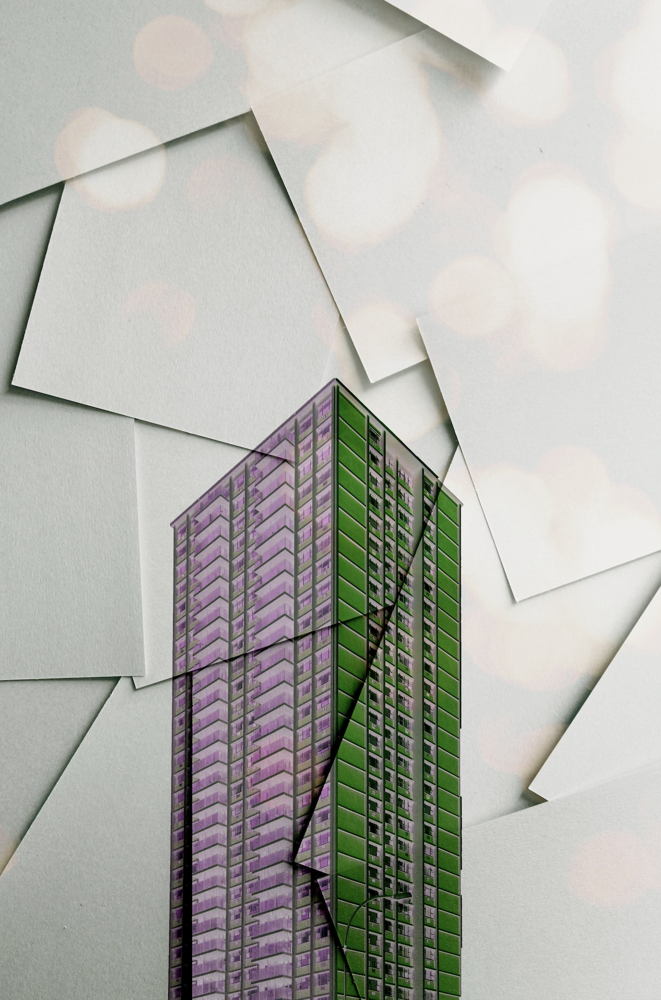
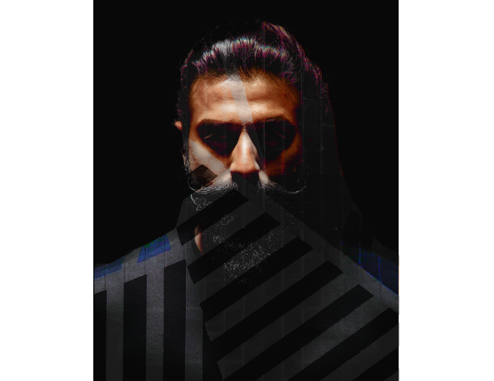
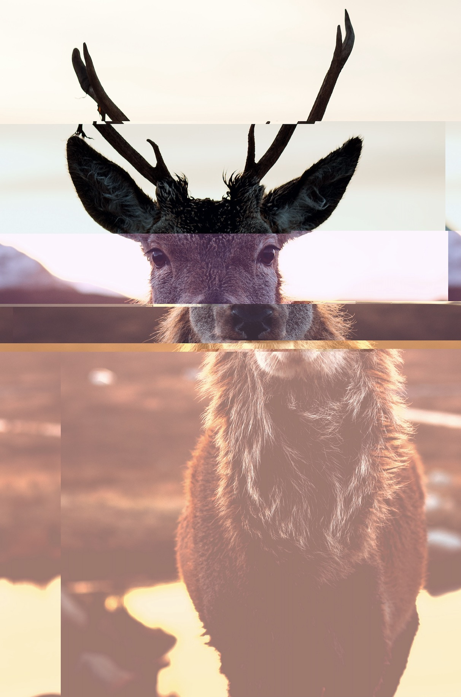

As a child, games occupied most of my time, from GBA (Game Boy Advance) portable game at that time to current video games. I have experienced many different games, and the existence of each different game has opened up different worlds for me and immersed me there. These games tell stories one after the other and are exciting and open my horizons. Since then, a large part of me will develop into the game.
For beginners who have just stepped into digital art, all the related techniques and skills are new and unknown. I am willing to try to use them in each different technology and different media fields, because this will allow me to understand further and become familiar with digital media, and also allow me to be more sophisticated in my abilities. Although I have many ideas, how to present them is based on my skills. Therefore, I have practiced 2D vision, 3D modeling, web design, coding, and other essential technologies, but still, need different knowledge and exercises to achieve a sufficient degree of freedom. Therefore, I also need to improve my essential ability to satisfy and enhance my creativity. I try various types of works, and whether they can express my ideas to a certain extent. In the form of code, pictures, and electronic media, it is wholly presented in front of the computer screen. I am improving, and I am continually improving these works, and I will continue to retain and extend the content to develop these stories.
Contact
New Media Art
TV Buddha（1989）
Nam June Paik
The Transfinite(2011)
RYOJI IKEDA
What is New Media Art ?
New media arts is the product that combines with the technology product and artists’ideas. I believe that the new media arts can be the tend of the development of the arts generally and it will become the most popular of the arts in this era. It not only brings a new practical way to creating but also renews the perspective of defining arts. It is a work that collides with contemporary technological products based on the content, form, and other aspects of Western modern art. In fact, if you think about it, the new media art is not a new thing. As early as the 1960s, concept art, early futurism, manifesto, da-da, and the happening art that were deeply influenced by Duchamp were born and transformed The 70's performing arts already have all the features we call today's new media art. So judging from the source art of these new media arts, they all have these characteristics: communication and cooperation, emphasis on the process of art occurrence, emphasis on the combination and interaction of technology and art. Therefore, artists have new directions and material media to explore the possibility of discovering new ideas and new worlds. In addition, the artwork itself is no longer a separate individual, but more a process of experiencing the participants into an artwork.
New art media will not be born for no reason, it is necessary to have some pioneers. Therefore, the one character comes out of my mind was Nam June Paik, the father of the video arts. In the 60s, Nam June Paik, who was active in the avant-garde art field, was inspired by the media and electronic technique and people's way of life and thinking. So he was the first to introduce television, the most popular and intuitive impact medium at the time, into art. Creating. In the later development of his artistic career, the element of television became his main medium of symbol. One of the works that impressed me is also the most famous one of Nam June Paik is TV Buddha. These two entities that will not meet completely will have a very visual impact under his design. A meditating bronze Buddha statue is facing the video camera and a white TV, and inside is the Buddha image was taken by the camera. I felt a shock from culture, time and spirit. Looking at the Buddha statue, I can feel and understand the profound historical significance behind the Buddha statue, and feel the meditation of a buddha. Corresponding to the product of the development technology of the times, cameras and televisions. The two collided with each other in my mind, one was the spirit and the object, and the other was the development and recording of time, both of which were highlighted in this artwork. After 1996, Nam June Paik also exhibited the same scene as the previous TV Buddha at the Hong Kong exhibition. This time, a color TV is placed on the face of a golden Buddha. The screen is also showing live images of Buddha statues. As an artist who grew up in the East and found his own creative path in the West, blending the East and the West, he gave this item. This piece of work still has a lot of space for reflection beyond the propositions of tradition and modernity, technology and religion. Nam June Paik likened his creation to painting: "We are moving closer to television, away from high-fidelity pictures to low-fidelity images, and so is painting. From Giotto to Rembrandt, the main goal of painting is to be realistic To nature, and Monet changed all of this. I'm doing the same thing. "I think no matter which side I'm leaning on, what I want to do is to express my thoughts to give the audience a different feeling, this It is also my biggest feeling for TV Buddha. So in the future, I will follow this idea to create.
Speaking of television elements used by Nam June Paik as his media symbol. When it comes to video art, we must mention the patriarch of the video art----Bill Viola. Bill Viola's work also has a special feature. At this time, nothing sound is better than having sound. Bill Viola seems to want to express the emotions in the work and the changes in the audience through the visual dynamic potential energy contained in his creative language. The Raft is one of his works. In the slow-motion, the people in the painting depict strangers of different skin colors and different statuses squeezed together and under the impact of high-pressure water. Under the impact of the current, the restraint of all surfaces and the personal image of hard work were torn apart, and it was useless in front of the instinctual protection mechanism. The high-pressure water pipe represents various events that people experience. Under slow-motion photography, human beings are strongly disturbed by the outside world, the emotions of fear for the rest of their lives, and the gesture of emotional shouting. This is the real and clear response of humans under the shock of events in slow motion. In addition to the visual impact, one of the main characteristics of new media art is interactivity. This type of participating artwork will break the distance between previous artworks and the public and allow the public to have a better experience. Ryoji Ikeda is a well-known Japanese sound artist. In this work, ‘THE TRANSFINITE’, visual and auditory make up this installation work. When people take off their shoes and participate in this large-scale work, the color of the black and white bars on the screen is completely determined by the audience. Then, as the audience walks or stands on the screen, the surround sound will emit electronic sounds according to the audience's position, and each audience will always affect the difference between the sound to be emitted at the same time and the screen display. The visual presentation element becomes a part of the sound visualization, and at the same time, it is converted into an image controlled by a person, and the change of the sound is controlled by the image transformation. In the dim indoor environment, the huge lighting installation works of art combined with the sound of complex electric sounds create a space full of huge sensorystimuli. Whether it is an audience or an artist, the works of art born at this moment are their moments. It must be said that this new media art is a kind of bold art. When art is constructed by a large number of machines, wires, meters and materials, this continues its expansion in time, not in space. Stay there. For example, a photo is often considered to capture a specific moment, and then the image created by the computer will not exist at any specific time, just like THE TRANSFINITE. When a scene is set, the pictures stored in the computer after editing and special processing are no longer tied to the past, present, and future.
Another influence that new media art brings to us is the change in the way of observing artworks. This destined that the exhibition of new media art itself requires the participation of the audience. Without this link, a piece of work may not be displayed. Sometimes it is a change in the form and meaning of the work. Because to understand new media art, you must first integrate your whole body into it, rather than watching it from a distance. In this way, interaction with art and people will transform the viewer's consciousness, and finally a new image, relationship, thinking and experience will appear. The viewer has a relationship with the works through electronic device sensors or other more sophisticated instruments. This is a new way of communication that new media art brings us. The change in this way shows that the artist's artistic expression and social responsibility have improved. In previous works of art, artists expressed their feelings through their works. However, whether the audience can accept this is a test of their visual accomplishment. In new media art, artists must not only express themselves but also try their best to make the things understood, so that the audience can accept visually, hearing and tactilely. Here, the function of art has been expressed to the greatest extent, which is also the embodiment of the function of "media" in the name of new media art.
So in general, new media art is still a developing art. Just like in this era of the new era, new media art is no longer a category related to painting and sculpture in the traditional sense, but a variety of According to Di, who has participated in the art exploration practice by using scientific and technological means, it is an art exploration field that has been opened but not yet completed, a new dimension of thinking about the relationship between art and contemporary technological and information-based social reality.
Date: February 4
Category: Essay
Hunting
3D Art Remix
The father is teaching his kid, which sits at the left corner, to hunt something. And you can see the crow is climbing the father’s back that it didn’t notice it. I combined three models into it. One is a kitten, and one is a big cat and a bird. They are looking in the same direction, and you can imagine the funny scene.
Date: March 5, 2020
Category: 3D Art Remix
Paper building
Digital Image Composition

Date: February 2020
Popmelt
Digital Image Composition
Date: Feburary 2020
Samurai
Digital Image Composition

Date: February 2020
The main thing I want to do is to present my work in a concise way. Although there is no major subject direction, it is all combined with several pictures. In addition, the image content is different element styles, so I intend to perform interesting combined experiments to show the works.
Deer
Glitch Art

For my glitch art, I chose the deer picture because I thought that animal can more present the relationship between animals and technology. I was using the audacity and jpg to txt to create my works. I opened the picture first, then converted the format to txt, and watched the change of the picture by copying the data and saving and undoing the action until I was satisfied. Then the second one uses audacity to change the picture, and the rendering effects are invert, echo and normalize. The middle part is invert, the top is echo, and the bottom is normalize. I have tried many different effects, but the work presented now is more satisfactory to me. I prefer the first processed picture because its changes can be seen as a vertical change like a staircase. All in all, the whole mission opened up a new horizon for me and allowed me to see the unique visual presentation of glitch art, which was fun.
Date: February 13
Category: Glitch Art
Deer
For my glitch art, I chose the deer picture because I thought that animal can more present the relationship between animals and technology. I was using the audacity and jpg to txt to create my works. I opened the picture first, then converted the format to txt, and watched the change of the picture by copying the data and saving and undoing the action until I was satisfied. Then the second one uses audacity to change the picture, and the rendering effects are invert, echo and normalize. The middle part is invert, the top is echo, and the bottom is normalize. I have tried many different effects, but the work presented now is more satisfactory to me. I prefer the first processed picture because its changes can be seen as a vertical change like a staircase. All in all, the whole mission opened up a new horizon for me and allowed me to see the unique visual presentation of glitch art, which was fun.
Date: February 13
Category: Glitch Art
Code & Dance
Video Mixed
This video is the first time I synthesized in Adobe Premiere Pro. It records how to combine two video sources. The inspiration for me is what happens when the two are not related, and if they are handled together, this is why I did it.